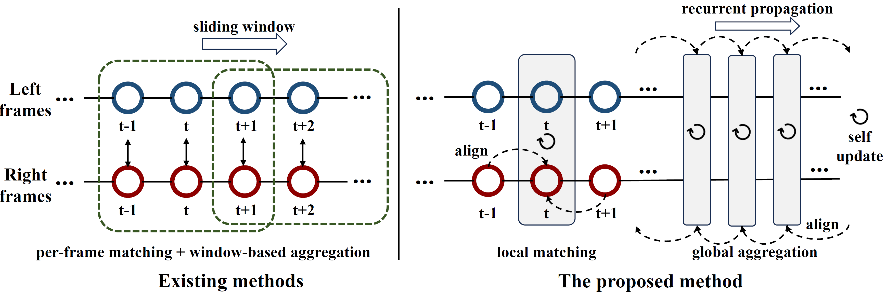

Comparsion with existing methods

Dynamic stereo matching is the task of estimating consistent disparities from stereo videos with dynamic objects. Recent learning-based methods prioritize optimal performance on a single stereo pair, resulting in temporal inconsistencies. Existing video methods apply per-frame matching and window-based cost aggregation across the time dimension, leading to low-frequency oscillations at the scale of the window size. Towards this challenge, we develop a bidirectional alignment mechanism for adjacent frames as a fundamental operation. We further propose a novel framework, BiDAStereo, that achieves consistent dynamic stereo matching. Unlike the existing methods, we model this task as local matching and global aggregation. Locally, we consider correlation in a triple-frame manner to pool information from adjacent frames and improve the temporal consistency. Globally, to exploit the entire sequence's consistency and extract dynamic scene cues for aggregation, we develop a motion-propagation recurrent unit. Extensive experiments demonstrate the performance of our method, showcasing improvements in prediction quality and achieving state-of-the-art results on various commonly used benchmarks.
@article{jing2024matchstereovideos,
title={Match-Stereo-Videos: Bidirectional Alignment for Consistent Dynamic Stereo Matching},
author={Junpeng Jing and Ye Mao and Krystian Mikolajczyk},
year={2024},
eprint={2403.10755},
archivePrefix={arXiv},
primaryClass={cs.CV}
}